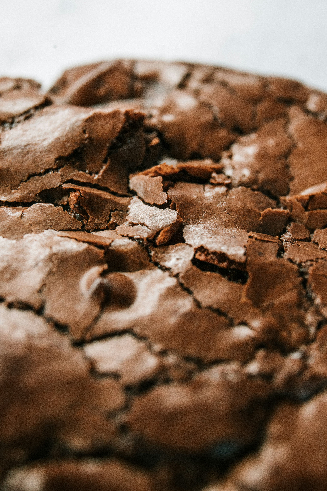

Cookies

Description
These chocolate chip cookies are crisp on the edges, soft and chewy in the
center, and loaded with melty chocolate chunks. With just a handful of
pantry staples and no fancy equipment, they're the perfect first recipe —
simple enough for a weeknight treat and good enough to share (or not).
Ingredients
- 1 cup (2 sticks) unsalted butter, softened to room temperature
- 3/4 cup granulated sugar
- 3/4 cup packed brown sugar
- 2 large eggs
- 1 teaspoon vanilla extract
- 2 cups all-purpose flour
- 1 teaspoon baking soda
- 1 teaspoon salt
- 2 cups chocolate chips
Steps
- Preheat oven to 350°F (175°C). Line a baking sheet with parchment paper.
- In a large bowl, cream together the butter, granulated sugar, and brown sugar until light and fluffy. Beat in the eggs one at a time, then stir in the vanilla extract.
- In a separate bowl, whisk together the flour, baking soda, and salt. Gradually add the dry ingredients to the wet ingredients, mixing until just combined. Fold in the chocolate chips.
- Drop rounded tablespoons of dough onto the prepared baking sheet, spacing them about 2 inches apart. Bake for 10-12 minutes, or until the edges are golden brown but the centers are still soft.
- Allow the cookies to cool on the baking sheet for 5 minutes before transferring them to a wire rack to cool completely. Enjoy!
Back to Home